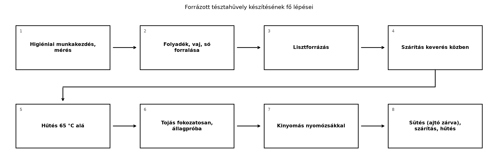

A cukrászműhelyben reggel egy nagy tálca képviselőfánkot kell készíteni, mert délelőtt érkezik egy esküvői rendelés. A képviselőfánk, az ekler és a profiterol egyetlen közös tésztacsaládból készül: a forrázott tésztából. Ha a tészta túl híg, a fánk szétterül a sütőlemezen, ha túl kemény, nem tud üregesre sülni. Ha rosszul sütjük, a fánk összeesik vagy nyers marad a közepén. Ezért pontosan kell ismerni a forrázás, a tojás bedolgozás és a gőzös sütés lépéseit.
A forrázott tészta különleges: nem élesztő, nem sütőpor lazítja, hanem a tésztában lévő vízből keletkező gőz. A tésztát először forrón, keményítővel csirízesítve készítjük, majd tojással beállítjuk. A tojás fehérjéje hőre alvad, a gőz feszíti, és a termék belsejében nagy, üreges szerkezet alakul ki. Ezt az üreget később tejszínnel, krémmel vagy sós töltelékkel tölthetjük.
Képzeljünk el egy kis tésztadarabot a forró sütőben. A tészta belsejében víz van. Amikor a sütő hőmérséklete 100 °C fölé emelkedik, a víz gőzzé alakul, térfogata erősen megnő, és belülről feszíti a tészta rugalmas vázát. A tojásfehérje közben megalvad, a keményítő megszilárdul, így a feszített forma megtartja magát. Ha a sütőajtót idő előtt nyitjuk, a gőz hirtelen kiszabadul, és az üreg összeesik. Ezért a forrázott tésztát fokozatosan, gőzben szilárduló vázként kell sütni.
Az alábbi folyamatábra a forrázott tésztahüvely készítésének fő lépéseit mutatja.

Definíció. A forrázott tészta (pâte à choux) olyan cukrászati tészta, amelyet víz, tej vagy keverékük, zsiradék, só, liszt és tojás felhasználásával készítünk. A lisztet forró folyadékba keverjük, ezért a keményítő részben elcsirízesedik. A tésztát tojással higítjuk, és gőzzel lazítjuk.
Szabály. A forrázott tésztában a lazítógáz a vízből keletkező vízgőz. A tésztához nem adunk élesztőt, sütőport vagy szalalkálit, mert a gőz és a tojás alvadása elegendő a feszített üreg kialakulásához.
A forrázott tészta alapanyagai és szerepük:
Jogszabály. A tojásos, tejes, tejszínes forrázott termékek hűtési és hőkezelési feltételeire a 852/2004/EK rendelet általános higiéniai követelményei és a NÉBIH jóhigiéniai útmutatói irányadók (ellenőrizendő: aktuális útmutató). A tojástermékeknek a Magyar Élelmiszerkönyv és a vonatkozó uniós rendelet szerinti jelölési és mikrobiológiai követelményeknek kell megfelelniük (ellenőrizendő: rendeletszám).
Továbbvitt eredmény. Az itt elkészített üreges tésztahüvelyt használjuk a Tészták és kisült termékeik anyaghányad-számítása, a tésztakészítés higiéniája, a Sós teasütemények (sós töltött hüvelyek), a Minyonok és minyon jellegű készítmények és a Krémesek: vajas/leveles és forrázott tésztából alfejezetben (képviselőfánk, ekler).
A 7. lépés állagpróbájának három lehetséges eredményét és a sült hüvely várható alakját az alábbi ábra veti össze: a túl kemény tészta nem válik el a kanáltól, a megfelelő lassan elválik és rövid, visszahajló csúcsot hagy, a túl híg lefolyik.
Higiénia. Forrázáskor a hőmérséklet nem csírátlanítja teljesen a kész tésztát; a nyers tojásos massza tehát potenciális Salmonella-kockázatot hordoz. A sütés az alakított hüvelyt hőkezeli, de a nyers masszával érintkező eszközöket, kezünket és munkafelületet azonnal el kell mosni. A feltört tojást felhasználásig hűtve kell tartani.
Figyelem. Forró edénnyel, forró masszával és gőzzel dolgozunk. A massza égési sérülést okozhat. Hosszú, hőálló fakanalat, edényfogó kesztyűt használjunk. A dagasztógép spirálját csak akkor érintsük, ha a gép áll és áramtalanított.
A forrázott tésztát sima vagy csillagcsővel ellátott nyomózsákból nyomjuk. A csillagcső a sütés után egyenletesebb, repedésmentesebb felületet ad.
A nyomózsákot függőlegesen tartjuk, a csövet kissé a sütőlemez fölött. A halmok legyenek azonos méretűek, mert a sütési idő egységes legyen. A sütőlemezt sütőpapírral vagy enyhén kikent, vékonyan lisztezett felülettel készítsük elő. A tésztadarabok alá ne kerüljön túl sok zsiradék, mert az megolvasztja és szétfolyatja azokat.
Az alábbi képsor a csőválasztást, a három alapformát (képviselőfánk függőleges zsákkal, ekler ferde zsákkal húzva, profiterol kis halomként), a csúcs lesimítását és a lemezre rakást mutatja.
A forrázott tésztát hirtelen, magas hőmérsékleten kezdjük sütni, hogy a gőz gyorsan képződjön. Tájékoztató érték: alsó-felső sütésnél 200–220 °C, légkeverésnél 180–200 °C (ellenőrizendő: sütőberendezés és receptúra szerint). A sütési idő a méret szerint 15–25 perc, a profiterolnál rövidebb, az eklernél hosszabb.
A sütés négy szakaszra bontható:
A helyesen és a hibásan sült hüvely metszetét az alábbi ábra mutatja: a jól kisült hüvelyben nagy belső üreg, vékony, száraz fal és egyenletes héj van; a korán nyitott sütőajtó vagy a rövid sütés összeesett, belül tömör, nedves hüvelyt ad.
Kritikus pont. A töltetlen hüvelyt a sütés hőkezeli. A tojásos, tejes, tejszínes töltelékkel töltött termék hűtött késztermék: a töltött hüvelyt 4 °C alatt kell tárolni (ellenőrizendő: hatályos útmutató). A töltetlen sült hüvelyt tiszta, száraz helyen, lefedve 1–2 napon belül fel kell használni; fagyasztva hosszabb ideig eltartható.
Biztonsági korlát. A sütő ajtaját óvatosan nyissuk, mert a gőz forrázást okozhat. A gépi tésztakészítés tanműhelyi vagy üzemi környezetben, oktatás után és felügyelet mellett végezhető; otthon kis adagban, kézi habverővel is gyakorolhatjuk.
A forrázott tészta alapreceptje tanulási célra (kb. 1,25 kg tésztához), tömegben:
| Nyersanyag | Mennyiség (g) | Megjegyzés |
|---|---|---|
| Víz | 250 | vagy víz–tej 1:1 |
| Vaj (82 % zsír) | 250 | reszelve vagy kockázva |
| Só | 5 | az ízhez |
| Liszt (BL 55) | 250 | átszitálva |
| Tojás, egész | 500 | fokozatosan, állagpróbával, hőmérsékletfüggően |
| Összes tészta nyersen | 1255 | a szárítási párolgás és a kinyomási veszteség miatt kisebb lesz a sütött tömeg |
A tojás mennyisége a liszt tömegéhez viszonyítva gyakorlati irányszám: 100 g liszthez 180–220 g tojást adunk. A pontos mennyiséget az állagpróba dönti el. A megadott tömegarány nem eredeti recept, hanem tanulási kiindulópont (ellenőrizendő: üzemi receptúra).
Példa. 400 g lisztből készítünk forrázott tésztát. Hány gramm tojást készítsünk elő, ha átlagosan 200 g tojást számolunk 100 g lisztre?
Adott: ; az arány .
A gyakorlatban ebből kb. 90 %-ot (720 g) készítünk be, a maradékot állagpróba után adjuk hozzá, nehogy túl híg legyen.
Számítás: sütési veszteség. 40 db kinyomott, nyers képviselőfánk összesen 1 200 g. Sütés után 1 050 g. Mennyi a sütési veszteség?
Ellenőrzés: a visszaszámolás: . ∎
Cél. A tanuló készítsen 24 db azonos méretű képviselőfánk-hüvelyt, üregesre, repedésmentesre, egyenletes barnulással.
Eszközök és anyagok. Tojás, víz, tej, vaj, só, liszt; mérleg, mérőedény, tűzhely, lábos, fakanál, keverőtál, kézi vagy gépi habverő, nyomózsák sima/csillagcsővel, sütőlemez, sütőpapír, rács.
Higiéniai munkakezdés. Munkaruha, hajháló, ékszer le, kézmosás. Felületek, edények, mérlegek tiszták. Tojást feltörés után szűrjük, hűtve használjuk.
| Nyersanyag | Mennyiség (g) | Megjegyzés |
|---|---|---|
| Víz | 125 | vagy 63 g víz + 63 g tej |
| Vaj | 125 | kockázva |
| Só | 3 | fűszer |
| Liszt (BL 55) | 125 | átszitálva |
| Tojás | 250–270 | fokozatosan, állagpróbával |
| Összes nyers tészta | 628–648 | a sütési veszteség kb. 15–20 % |
Figyelem. A sütőből kivett, gőzzel teli lemez forró lehet; sütőkesztyűvel dolgozz. A nyomózsákot ne tartsd a forró sütő fölé.
A megsütött forrázott hüvelyt érzékszervileg és mérlegelve ellenőrizzük.
A tömegellenőrzésnél az egyes darabok eltérése maximum ±10 % legyen (tanulási érték).
| Hiba | Tünet | Ok | Megelőzés/Javítás |
|---|---|---|---|
| Lapos, terült hüvely | A fánk szétfolyik, alacsony | Túl híg tészta, túl sok tojás, nem elég forrázás, túl alacsony kezdő hőmérséklet | Tojást visszafogottan adagoljuk, forrázzuk tovább, magasabb hőfokon kezdjük |
| Összeesett, horpadt hüvely | Sütés után töppedt, ráncos | Túl korai ajtónyitás, hirtelen gőzkieresztés, alulsütés, túl magas páratartalom | Ne nyissuk a sütőt a feszítési szakaszban, süssük készre, szárítsuk a héját |
| Nyers, tömör közép | Belül szivacsos, ragadós | Túl alacsony hőmérséklet, kevés gőz, túl vastag hüvely, rövid sütési idő | Kezdő hőfok emelése, azonos méretű darabok, hosszabb szárítás |
| Repedezett, szakadt felület | Csúnya, kiálló repedések | Túl forró sütő, túl sűrű tészta, csillagcső nélküli sima cső | Hőfok csökkentése, enyhe permetezés, állagpróbával pontosítás |
| Só hiánya, égett szél | Ízetlen, keserű | Elmaradt só, túl magas hőfok | Só pontos mérése, sütő kalibrálása |
Egy cukrászda délutáni műszakban 120 profiterol-hüvelyt készít, de az első tepsi kinyitásakor a fánkok összeesnek. A szakács ellenőrzi a sütő hőmérsékletét: a hőmérője 170 °C-ot mutat, és kiderül, hogy a tanuló a sütő ajtaját többször nyitotta, hogy a fánkokat „megnézze”. A gőz kiszabadult, mielőtt a tojásfehérje megszilárdult. A tételt nem lehet visszaállítani: a fánkok félig nyersek, selejtezni kell. A második tepsinél az ajtót mindvégig zárva tartják, a fánkok szépen megemelkednek. A tanulság: a forrázott tésztánál a sütőajtó nyitása nem kíváncsiság, hanem élelmiszerbiztonsági és minőségi hiba.
1. feladat (A). Sorold fel a forrázott tészta öt alapanyagát, és nevezd meg mindegyik szerepét.
2. feladat (A). Készíts 300 g lisztből forrázott tésztát. Mennyi vízre, vajra és tojásra számíts, ha az alaprecept szerint a liszt: víz:vaj:tojás arány 1:1:1:2? Számold ki a nyers tészta tömegét is.
3. feladat (B). 36 db azonos méretű ekler hüvelyt nyomtál, egyenként nyersen 45 g. Sütés után a tömeg 1 300 g. Mekkora a sütési veszteség?
4. feladat (B). A kész forrázott tésztád túl kemény, nem tudod kinyomni. Milyen hibát követtél el, és hogyan lehet javítani?
5. feladat (C). Egy vendég gluténérzékeny, de szeretne képviselőfánkot. Milyen nehézségekbe ütközik a forrázott tészta gluténmentes változata? Mi a technológiai következmény, és mivel helyettesítheted a lisztet? Fogalmazd meg röviden, miért nem azonos az eredmény.
6. feladat (D). Készítsd el a gyakorlati útmutató szerint a 24 db képviselőfánk-hüvelyt. Töltsd ki a technológiai lapot, mérd meg a sütési veszteséget, és értékeld a terméket a minőségi szempontok szerint.
Önellenőrzés – válaszok.
1. feladat. Víz/tej (gőz, íz), vaj (lazítás, íz, puhább héj), lisz (keményítő, váz), tojás (fehérje alvad, hígít, sárgája emulgeál), só (ízkiemelés).
2. feladat. A liszt 300 g, akkor víz 300 g, vaj 300 g, tojás 600 g. Nyers tészta: . A só kimaradt, de az íz miatt kb. 6 g.
3. feladat. Nyers tömeg: . Sütött: 1300 g. Veszteség:
4. feladat. Túl kevés tojást adtunk, vagy túlságosan elpárolgott a víz a szárításkor, vagy túllépett a forrázási idő. Javítás: a masszát 65 °C alá hűtjük, majd kis adagokban tojást keverünk hozzá, amíg az állagpróba nem megfelelő. Ha már teljesen kihűlt, a tojás nehezen dolgozható be.
5. feladat. A forrázott tészta vázát a csirízesedett keményítő és az alvadó tojásfehérje adja; a búzaliszt fehérjéi ezt rugalmasabbá teszik. Gluténmentes keveréknél a keményítő-kötőképesség és a fehérjeváz a nehézség, a tészta gyengébb, jobban folyik. Helyettesíthető pl. gluténmentes kenyérliszt, rizsliszt, tápióka- vagy kukoricakeményítő keverékével, esetleg tojásfehérje hozzáadásával, de a hüvely fala vékonyabb, kevésbé rugalmas. A termék csak akkor jelölhető gluténmentesként, ha az összetevők és a gyártási környezet is garantálja (ellenőrizendő: 1169/2011/EU).
6. feladat. A tanuló praktikusan elvégzi és dokumentálja. Elfogadható, ha a hüvely aranybarna, üreges, a sütési veszteség 15–22 %, az összes tömeg a megadott tartományban van.
A forrázott tészta (pâte à choux) gőzzel lazított és tojásfehérjével szilárdított tészta. Víz, tej, vaj, só, liszt és tojás kell hozzá. A lisztet forró folyadékban csirízesítjük, majd a masszát szárítjuk, hogy a tojás jól beépüljön. A tojást fokozatosan adjuk hozzá, amíg a tészta sima, fényes és nyúlós lesz. A formázás nyomózsákkal történik: fánk halom, ekler csík, profiterol apró halom. Sütése magas hőfokon indul (kb. 200–220 °C), a sütő ajtaját a gőzfeszítési szakaszban tilos nyitni, majd mérsékelt hőfokon szárítjuk. A hibák: a túl híg tészta lapos, a korai ajtónyitás összeesést, a túl alacsony hőfok nyers közepet okoz. A sütési veszteség képlete: . A kész hüvelyt hűtve, töltve 4 °C alatt kell tárolni (ellenőrizendő: hatályos útmutató). Továbbvitt eredmény: ezt a hüvelyt használjuk a Tészták és kisült termékeik anyaghányad-számítása, a tésztakészítés higiéniája, a Sós teasütemények, a Minyonok és minyon jellegű készítmények és a Krémesek: vajas/leveles és forrázott tésztából alfejezetben.
A fejezet a cukrásztechnológia alapfolyamataira épül: csirízesedés, tojásfehérje-alvadás, gőzlazítás, sütési veszteség. Jogszabályi hivatkozások: 852/2004/EK rendelet (élelmiszer-higiénia), a tojástermékek követelményei, a fogyasztók tájékoztatása. Ellenőrizendő: a sütési hőfok- és időtáblázat üzemi ajánlása, a tojás bedolgozásának pontos hőmérséklettartománya, a gluténmentes lisztkeverékek gyártói adatlapja, a töltött forrázott termékek hűtési paraméterei, a fagyasztott hüvely eltarthatósága. A technológiai hibák ok-okozati elemzése tankönyvi szintű, a pontosan feltüntetett mennyiségek tájékoztató jellegűek.